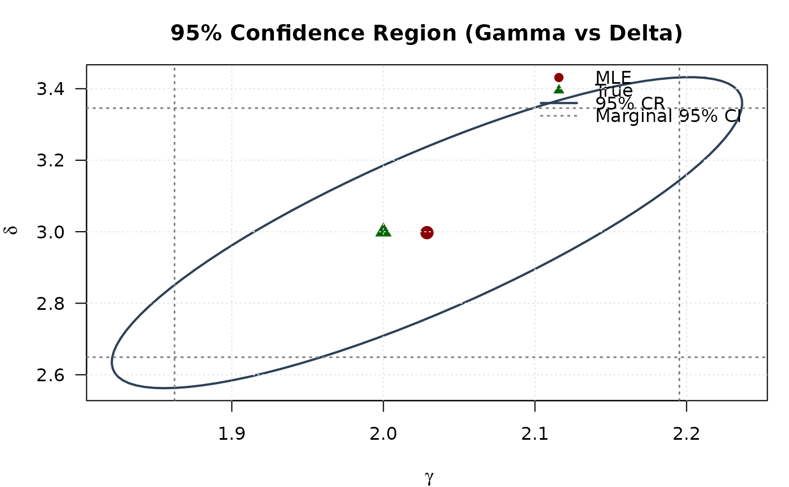

Gradient of the Negative Log-Likelihood for the Beta Distribution (gamma, delta+1 Parameterization)
Source:R/RcppExports.R
grbeta.RdComputes the gradient vector (vector of first partial derivatives) of the
negative log-likelihood function for the standard Beta distribution, using
a parameterization common in generalized distribution families. The
distribution is parameterized by gamma (\(\gamma\)) and delta
(\(\delta\)), corresponding to the standard Beta distribution with shape
parameters shape1 = gamma and shape2 = delta + 1.
The gradient is useful for optimization algorithms.
Value
Returns a numeric vector of length 2 containing the partial derivatives
of the negative log-likelihood function \(-\ell(\theta | \mathbf{x})\) with
respect to each parameter: \((-\partial \ell/\partial \gamma, -\partial \ell/\partial \delta)\).
Returns a vector of NaN if any parameter values are invalid according
to their constraints, or if any value in data is not in the
interval (0, 1).
Details
This function calculates the gradient of the negative log-likelihood for a
Beta distribution with parameters shape1 = gamma (\(\gamma\)) and
shape2 = delta + 1 (\(\delta+1\)). The components of the gradient
vector (\(-\nabla \ell(\theta | \mathbf{x})\)) are:
$$ -\frac{\partial \ell}{\partial \gamma} = n[\psi(\gamma) - \psi(\gamma+\delta+1)] - \sum_{i=1}^{n}\ln(x_i) $$ $$ -\frac{\partial \ell}{\partial \delta} = n[\psi(\delta+1) - \psi(\gamma+\delta+1)] - \sum_{i=1}^{n}\ln(1-x_i) $$
where \(\psi(\cdot)\) is the digamma function (digamma).
These formulas represent the derivatives of \(-\ell(\theta)\), consistent with
minimizing the negative log-likelihood. They correspond to the relevant components
of the general GKw gradient (grgkw) evaluated at \(\alpha=1, \beta=1, \lambda=1\).
Note the parameterization: the standard Beta shape parameters are \(\gamma\) and \(\delta+1\).
References
Johnson, N. L., Kotz, S., & Balakrishnan, N. (1995). Continuous Univariate Distributions, Volume 2 (2nd ed.). Wiley.
Cordeiro, G. M., & de Castro, M. (2011). A new family of generalized distributions. Journal of Statistical Computation and Simulation,
(Note: Specific gradient formulas might be derived or sourced from additional references).
Examples
# \donttest{
## Example 1: Basic Gradient Evaluation
# Generate sample data
set.seed(123)
n <- 1000
true_params <- c(gamma = 2.0, delta = 3.0)
data <- rbeta_(n, gamma = true_params[1], delta = true_params[2])
# Evaluate gradient at true parameters
grad_true <- grbeta(par = true_params, data = data)
cat("Gradient at true parameters:\n")
#> Gradient at true parameters:
print(grad_true)
#> [1] -13.640592 5.466001
cat("Norm:", sqrt(sum(grad_true^2)), "\n")
#> Norm: 14.695
# Evaluate at different parameter values
test_params <- rbind(
c(1.5, 2.5),
c(2.0, 3.0),
c(2.5, 3.5)
)
grad_norms <- apply(test_params, 1, function(p) {
g <- grbeta(p, data)
sqrt(sum(g^2))
})
results <- data.frame(
Gamma = test_params[, 1],
Delta = test_params[, 2],
Grad_Norm = grad_norms
)
print(results, digits = 4)
#> Gamma Delta Grad_Norm
#> 1 1.5 2.5 206.71
#> 2 2.0 3.0 14.69
#> 3 2.5 3.5 104.03
## Example 2: Gradient in Optimization
# Optimization with analytical gradient
fit_with_grad <- optim(
par = c(1.5, 2.5),
fn = llbeta,
gr = grbeta,
data = data,
method = "L-BFGS-B",
lower = c(0.01, 0.01),
upper = c(100, 100),
hessian = TRUE,
control = list(trace = 0)
)
# Optimization without gradient
fit_no_grad <- optim(
par = c(1.5, 2.5),
fn = llbeta,
data = data,
method = "L-BFGS-B",
lower = c(0.01, 0.01),
upper = c(100, 100),
hessian = TRUE,
control = list(trace = 0)
)
comparison <- data.frame(
Method = c("With Gradient", "Without Gradient"),
Gamma = c(fit_with_grad$par[1], fit_no_grad$par[1]),
Delta = c(fit_with_grad$par[2], fit_no_grad$par[2]),
NegLogLik = c(fit_with_grad$value, fit_no_grad$value),
Iterations = c(fit_with_grad$counts[1], fit_no_grad$counts[1])
)
print(comparison, digits = 4, row.names = FALSE)
#> Method Gamma Delta NegLogLik Iterations
#> With Gradient 2.029 2.997 -359.8 12
#> Without Gradient 2.029 2.997 -359.8 12
## Example 3: Verifying Gradient at MLE
mle <- fit_with_grad$par
names(mle) <- c("gamma", "delta")
# At MLE, gradient should be approximately zero
gradient_at_mle <- grbeta(par = mle, data = data)
cat("\nGradient at MLE:\n")
#>
#> Gradient at MLE:
print(gradient_at_mle)
#> [1] -0.0020945895 0.0006804804
cat("Max absolute component:", max(abs(gradient_at_mle)), "\n")
#> Max absolute component: 0.00209459
cat("Gradient norm:", sqrt(sum(gradient_at_mle^2)), "\n")
#> Gradient norm: 0.002202353
## Example 4: Numerical vs Analytical Gradient
# Manual finite difference gradient
numerical_gradient <- function(f, x, data, h = 1e-7) {
grad <- numeric(length(x))
for (i in seq_along(x)) {
x_plus <- x_minus <- x
x_plus[i] <- x[i] + h
x_minus[i] <- x[i] - h
grad[i] <- (f(x_plus, data) - f(x_minus, data)) / (2 * h)
}
return(grad)
}
# Compare at MLE
grad_analytical <- grbeta(par = mle, data = data)
grad_numerical <- numerical_gradient(llbeta, mle, data)
comparison_grad <- data.frame(
Parameter = c("gamma", "delta"),
Analytical = grad_analytical,
Numerical = grad_numerical,
Abs_Diff = abs(grad_analytical - grad_numerical),
Rel_Error = abs(grad_analytical - grad_numerical) /
(abs(grad_analytical) + 1e-10)
)
print(comparison_grad, digits = 8)
#> Parameter Analytical Numerical Abs_Diff Rel_Error
#> 1 gamma -0.00209458950 -0.00210093276 6.3432585e-06 0.0030284016
#> 2 delta 0.00068048039 0.00067643668 4.0437060e-06 0.0059424276
## Example 5: Score Test Statistic
# Score test for H0: theta = theta0
theta0 <- c(1.8, 2.8)
score_theta0 <- -grbeta(par = theta0, data = data)
# Fisher information at theta0
fisher_info <- hsbeta(par = theta0, data = data)
# Score test statistic
score_stat <- t(score_theta0) %*% solve(fisher_info) %*% score_theta0
p_value <- pchisq(score_stat, df = 2, lower.tail = FALSE)
cat("\nScore Test:\n")
#>
#> Score Test:
cat("H0: gamma=1.8, delta=2.8\n")
#> H0: gamma=1.8, delta=2.8
cat("Test statistic:", score_stat, "\n")
#> Test statistic: 11.47398
cat("P-value:", format.pval(p_value, digits = 4), "\n")
#> P-value: 0.003224
## Example 6: Confidence Ellipse (Gamma vs Delta)
# Observed information
obs_info <- hsbeta(par = mle, data = data)
vcov_full <- solve(obs_info)
# Create confidence ellipse
theta <- seq(0, 2 * pi, length.out = 100)
chi2_val <- qchisq(0.95, df = 2)
eig_decomp <- eigen(vcov_full)
ellipse <- matrix(NA, nrow = 100, ncol = 2)
for (i in 1:100) {
v <- c(cos(theta[i]), sin(theta[i]))
ellipse[i, ] <- mle + sqrt(chi2_val) *
(eig_decomp$vectors %*% diag(sqrt(eig_decomp$values)) %*% v)
}
# Marginal confidence intervals
se_2d <- sqrt(diag(vcov_full))
ci_gamma <- mle[1] + c(-1, 1) * 1.96 * se_2d[1]
ci_delta <- mle[2] + c(-1, 1) * 1.96 * se_2d[2]
# Plot
par(mar = c(4, 4, 3, 1))
plot(ellipse[, 1], ellipse[, 2], type = "l", lwd = 2, col = "#2E4057",
xlab = expression(gamma), ylab = expression(delta),
main = "95% Confidence Region (Gamma vs Delta)", las = 1)
# Add marginal CIs
abline(v = ci_gamma, col = "#808080", lty = 3, lwd = 1.5)
abline(h = ci_delta, col = "#808080", lty = 3, lwd = 1.5)
points(mle[1], mle[2], pch = 19, col = "#8B0000", cex = 1.5)
points(true_params[1], true_params[2], pch = 17, col = "#006400", cex = 1.5)
legend("topright",
legend = c("MLE", "True", "95% CR", "Marginal 95% CI"),
col = c("#8B0000", "#006400", "#2E4057", "#808080"),
pch = c(19, 17, NA, NA),
lty = c(NA, NA, 1, 3),
lwd = c(NA, NA, 2, 1.5),
bty = "n")
grid(col = "gray90")

# }